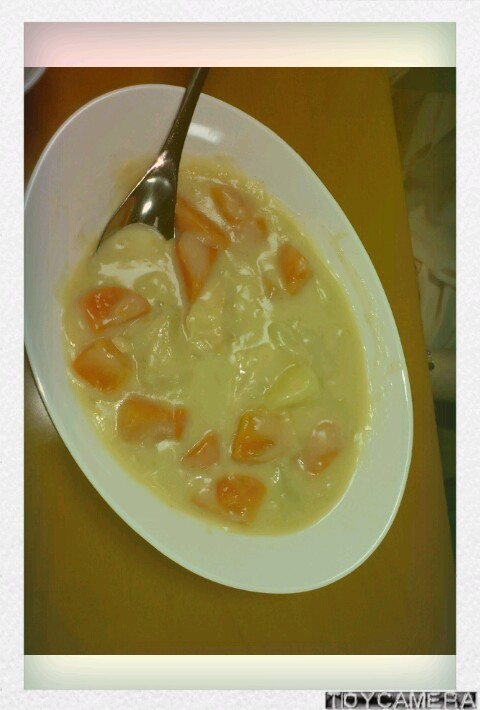

| 2012/04 24 Tue | 川村真洋 happyberthdayまあや&メン バーのこと。ろってぃー♪ |
ほいっ♪こんちくわ・〇・
まひろってぃー♪
であります!
・ω・´
昨日はまあや★の
14歳のお誕生日っω
まひろ、まあやのこと
大好きですっっ・ω・｀))
よしっ,
初めての告白...。
(〃ω〃)
(⌒‐⌒)笑
まあやにケーキ買って
お祝いしました＾＾
あっ(∀)
ぢゃあ、
まあや★が誕生日
だったとゆうことで
『今日のメンバーのこと。』
まあや〜〜(⌒‐⌒)と
せ〜いらりんりん('-'*)。
...。
せいらりんは
ニンジンが大好きですねっ♪
それにしても,
...。

『オレンジ率多いなぁ〜>∀<』
満足そうに食べる
せいらりん♪を見ながら
まひろもクリームシチューを
一緒に食べました^ω^笑
せいらりん♪とは
上京したての時
一緒に暮らしていました。
その時からせいらりん♪の
ことは ずっと大好きです^ω^
あの笑顔があったら
安心するからっ♪
だから せいらりん♪が
おらんかったら
「せいらりん♪おらんのぉ〜？
,何してんねやろぉ〜？」
ってつい
ゆってしまっている
自分がいます(ω)
せいらりん♪は
会う度 笑ってるけど、
ダメなことはダメだと
ちゃんとメンバーを
思って言ってくれます!
あと,
電車に乗る時はいつも
次は何号車目に乗ると
降りた時に改札に近いとか
どこが座れる確立が高いとか
降りてから また改札まで
歩かないといけない
車両に乗ってしまった時も
どーすれば少しでも
効率が良いかというのを
考えてるみたいです＾ω＾
だから 学校に行く時は
せいらりんに任せて
てくてく着いていってます♪
まひろも
人のこと言えないですけどね。笑
次何車両目に乗る。
ってはのは
いつも調べて覚えたり
してるから^ω^笑
メンバーをすごく
盛り上げてくれる存在です∀
まあや★は、
初めて面と向かって
話した時から
『あっ この子すごいなぁω
いい子やなぁ』
って思ってました^ω^
普段は やっぱ最年少だから
めちゃくちゃ元気で
どじなことしたり
変なこといったり
面白いことしたりして
メンバーからは
「も〜う、まあやww(>∀<)!!」
みたいな感じなんですけど、
中身が普通の13歳とは
違います。
(昨日14歳になりました☆)
まあやの好きなところは
見た目は元気で
はっちゃけてるのに
わがままは絶対言わなくて
人の言うことはちゃんと聞いて
すごい周りに気遣い
していました。
13歳で親元離れて
広島から東京にきたのも
本当に色んな思い
しただろうなぁ。
と思います。
ずっとまあや♪らしく
元気なまあや♪でいてね＾ω＾
まあやにしても
せいらりんにしても
一緒に居ると
笑顔をわけてくれる
存在です(＾ω＾)
以上っ
ろってぃー♪でした☆ノシ